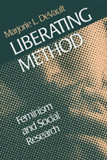

One researcher examines the dimensions of feminist research
One researcher examines the dimensions of feminist research


 One researcher examines the dimensions of feminist research
One researcher examines the dimensions of feminist research

|  |
Liberating MethodFeminism and Social ResearchMarjorie L. DeVaultpaper EAN: 978-1-56639-698-1 (ISBN: 1-56639-698-0) |
"Marjorie DeVault is a major voice in the field of qualitative and feminist methods. Any bibliography that did not include her work would be incomplete. Her book does not only delve into the past, but charts the future."
—Shulamit Reinhartz, author of Feminist Methods in Social Research
Feminist scholars and those inspired by other liberatory movements have raised profound questions about the standard practices of social research. Arguing that established methods too often ignore and obfuscate social oppression, they search for approaches that will more adequately represent marginalized groups and the social processes that organize their lives. Liberating Method charts one researcher's view of this project as Marjorie L. DeVault, one of the leading practitioners and teachers of feminist methodology, examines in her collection of new and previously published essays the dimensions of feminist research.
DeVault believes in "writing carefully," that is with care (precision) and caring (empathy). In addition to essays on how women write, are silenced, and can speak up, she includes an autobiographical sketch, a discussion of "the self as resource," and a section on what she calls "excavation," or the work of recovering unrecognized or suppressed aspects of women's experience. She explores the sources and meanings of feminist methodology, the strategies of reflexive analysis, and the issues that arise when writing and teaching feminist research. Committed to a feminism attentive to oppressions that operate simultaneously with gender, DeVault considers exclusions and distortions in feminist research and strategies for building more inclusive approaches. Including a closing essay that presents "practical advice" for oppositional researchers, Liberating Method reflects DeVault's conviction that feminist insights can and should contribute to a sounder, more rigorous social science.
Excerpt available at www.temple.edu/tempress
"Liberating Method makes an innovative and valuable contribution to ongoing debates over the status and nature of feminist research in sociology.... Those teaching courses on feminist research, in particular, will find this a valuable book for suggesting strategies, prodding thinking, and sparking debate."
—Canadian Journal of Sociology Online
Acknowledgments
Part I: Introduction
1. Becoming a Feminist Scholar: A Second-Generation Story
Part II: What Is Feminist Methodology?
2. Talking Back to Sociology: Distinctive Contributions of Feminist Methodology
3. Institutional Ethnography: A Strategy for Feminist Inquiry
Part III: Excavation
4. Talking and Listening from Women’s Standpoint: Feminist Strategies for Interviewing and Analysis
5. Ethnicity and Expertise: Racial-Ethnic Knowledge in Sociological Research
Part IV: The Self as Resource
6. Novel Readings: The Social Organization of Interpretation
7. Whose Science of Food and Health? Narratives of Profession and Activism from Public Health Nutrition
Part V: Writing and Rhetorical Strategy
8. Women Write Sociology: Rhetorical Strategies
9. Metaphors of Silence and Voice in Feminist Thought (with Chrys Ingraham)
10. Speaking Up, Carefully: Authorship and Authority in Feminist Writing
Part VI: Craft Knowledge of Feminist Research
11. From the Seminar Room: Practical Advice for Researchers
Appendix A
Appendix B
Notes
References
Index
List of Data for Sources in Chapter 6
Commentary on The Late Bourgeois World
Readings for a Seminar on "Feminist Methodologies"
 | Marjorie L. DeVault is author of the feminist classic Feeding the Family: The Social Organization of Caring as Gendered Work. She is Associate Professor of Sociology and a member of the Women's Studies Program at Syracuse University. She has also edited A Complex Sorrow: Reflections on Cancer and an Abbreviated Life (Temple). |
© 2015 Temple University. All Rights Reserved. This page: http://www.temple.edu/tempress/titles/1452_reg.html.